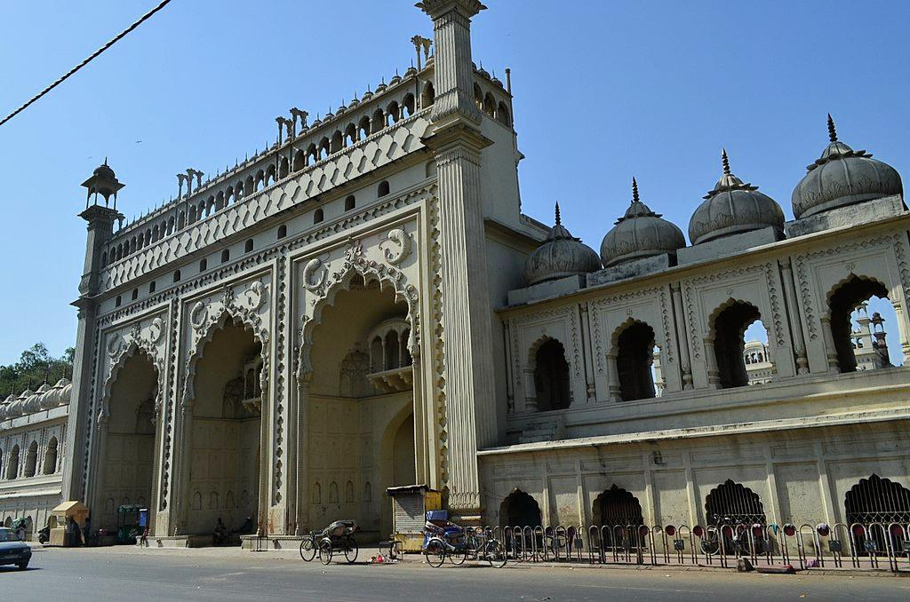

Opening Hours
Daily: 6:00 AM to 5:00 PM.
Closed: Monday
Last entry is 30 minutes before closing. Hours may vary during special events or national holidays. Please check our Events page for updates.
Ticket Information
- Adults: ₹50
- Children (Under 12): ₹25
- Foreigners: ₹500
- Additional Charges: ₹10 for digital camera, ₹25 for video camera
- Group discounts available for parties of 10 or more.

The main entrance of Bara Imambara.